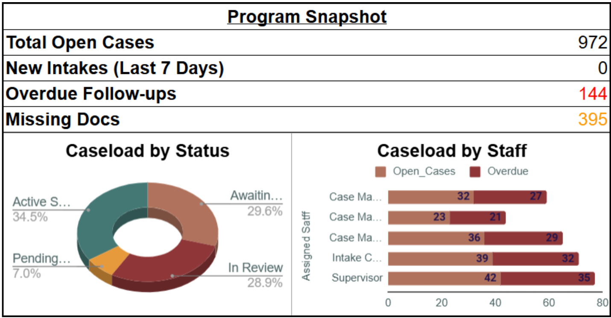
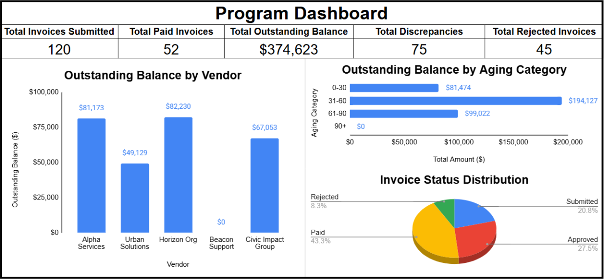
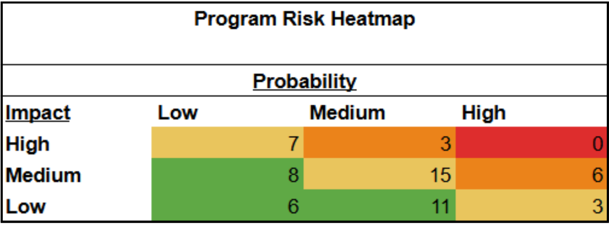

Case Management Support Tracking System
Project Overview
Designed a structured case management tracking system to support intake operations, workflow visibility, documentation tracking, and weekly reporting. The system simulates administrative workflows commonly used by nonprofit programs, service organizations, and government-facing support teams.
Operational Challenge
Many case teams rely on fragmented spreadsheets and manual updates, which can lead to inconsistent intake records, delayed follow-ups, documentation bottlenecks, and limited visibility into caseload health.
Solution Developed
- Standardized intake log for new case records
- Status tracker for workflow progression and milestone monitoring
- Documentation checklist for required case files
- Weekly reporting dashboard for program oversight
System Components
- Intake Log: tracks intake date, referral source, program type, issue category, priority, and assigned staff.
- Status Tracker: records status changes, milestone dates, barriers, escalation flags, and closure outcomes.
- Documentation Checklist: monitors required document completion and compliance readiness.
- Program Snapshot Dashboard: summarizes open cases, intake trends, overdue follow-ups, and workload distribution.
Program Snapshot

Key Metrics Monitored
- Total open cases
- New intake volume
- Overdue follow-ups
- Missing documentation alerts
- Caseload by status
- Caseload by staff member
Operational Impact
- Improved case workflow visibility
- Reduced documentation delays
- Faster weekly reporting
- Stronger operational oversight
Government Billing Administration Support
Project Overview
Designed a structured billing administration system to support invoice tracking, payment reconciliation, and financial reporting across multiple program contracts. The system simulates administrative billing workflows commonly used by government contractors, nonprofit service providers, and public program administrators responsible for managing high-volume invoices.
Operational Challenge
Program finance teams frequently rely on fragmented spreadsheets and manual invoice tracking, creating limited visibility into outstanding balances, payment discrepancies, and aging invoices. Without structured reconciliation controls, billing errors, delayed payments, and vendor disputes can increase financial risk and operational workload.
Solution Developed
- Invoice billing log
- Payment reconciliation tracker
- Aging analysis report
- Billing compliance checklist
Project Visual

Administrative Operations Workflow
Project Overview
Designed a structured administrative operations framework to standardize intake procedures, document organization, data privacy controls, and reporting schedules. The system stimulates operational workflows commonly used by service organizations and government program teams responsible for managing documentation, compliance, and reporting requirements.
Operational Challenge
Administrative teams often rely on informal processes for document management, intake procedures, and reporting schedules. This can result in inconsistent file organization, delayed reporting cycles, and increased compliance risk when managing sensitive records.
Solution Developed
- Intake process SOP
- Documentation and naming and retention standards
- Data privacy and access protocols
- Operational reporting calendar
Project Visual

Program Coordination Framework
Project Overview
Designed a program coordination framework to support planning, stakeholder communication, risk monitoring, and deliverable tracking across multi-phase initiatives. The framework simulates coordination systems commonly used by consulting teams and program managers resposible for overssing complex projects.
Operational Challenge
Programs involving multiple teams and stakeholders often struggle with inconsistent planning processes, unclear deliverables, and unmanaged project risks. Without structured coordination tools, communication breakdowns and missed milestones can impact program and delivery.
Solution Developed
A structures program coordination system consisting of four manangement tools:
- Program timeline planning
- Risk monitoring register
- Stakeholder communication plan
- Deliverable tracking matrix
Together, these tools provide visibility into project progress while ensuring clear accountability across teams.
Project Visual
